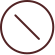
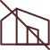
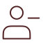

记录迁徙鸟类的观察时间、地点、数量和状态，帮助科研人员掌握种群动态和迁徙规律，形成长期监测数据。
拒绝非法猎捕、交易、食用和使用鸟类制品，发现相关行为及时向主管部门反馈，减少迁徙途中的人为威胁。
避免向栖息地投放垃圾、塑料和渔网等废弃物，减少驱赶、投喂和围观，让候鸟获得稳定的停歇环境。
保护湖泊、滩涂、河口和农田等关键栖息地，减少水体污染和岸线破坏，为候鸟迁徙提供补给与庇护。
观鸟和摄影时保持距离，不追逐、不惊飞、不使用强光和无人机干扰，让鸟类安全完成觅食、休息和越冬。